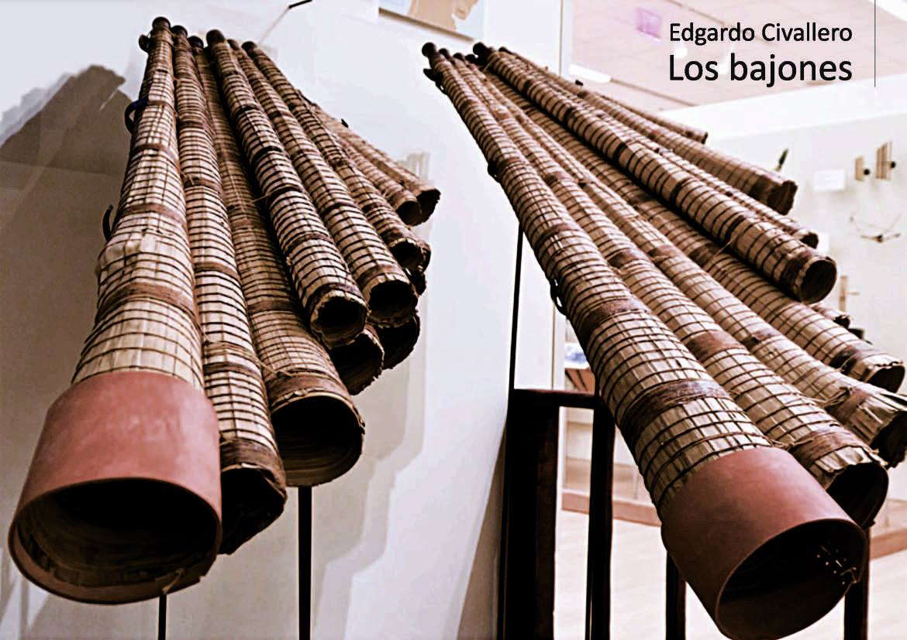

Los bajones
Inicio > Libros digitales sobre música. Serie 1 > Los bajones
Cómo citar este trabajo: Civallero, Edgardo (2025). Los bajones. Edición de archivo. Bogotá: El Zorro de Abajo Editora.
Descargar en PDF.
Este libro constituye un estudio integral sobre uno de los aerófonos más singulares del continente sudamericano: el bajón del pueblo Mojeño del oriente boliviano. A través de una combinación de análisis técnico, reconstrucción histórica y lectura etnomusicológica, la obra reconstruye la genealogía material, simbólica y cultural de este instrumento múltiple, formado por un conjunto de trompetas naturales dispuestas en hilera y concebido tanto como herramienta ritual indígena como herencia híbrida del sincretismo barroco de las misiones jesuíticas de Moxos.
Se describe la estructura del bajón: un conjunto de tubos cónicos de hojas de palmeras cusi o jatata, enrolladas sobre soportes de cogollo y unidas con hilo de algodón encerado con cera de abeja. Cada tubo, provisto de una boquilla de cedro o tarara, produce una sola nota. Los tubos se ensamblan sobre una delgada tabla —la peineta—, donde se pintan las letras del sistema de notación alemán, vestigio de la influencia jesuítica. En su forma tradicional, el bajón "macho" (diez tubos) y el "hembra" (nueve) interpretan de manera alternada los intervalos de tercera que configuran una escala diatónica, reproduciendo así la técnica del hocket característica de las flautas de Pan andinas. Su sonido ronco, profundo y vibrante cumple la función de bajo continuo dentro de las formaciones musicales locales, emparentándose en su función con la tuba europea.
El texto analiza su contexto geográfico y cultural: el departamento de Beni, en el oriente boliviano, especialmente la región de San Ignacio de Moxos y la ciudad de Trinidad. Allí, el bajón ha permanecido como parte del patrimonio musical del pueblo Mojeño, cuya organización cultural fue modelada por las reducciones jesuíticas de los siglos XVII y XVIII. Se muestra cómo, dentro del entramado misional, el instrumento indígena fue reapropiado y re-funcionalizado para cumplir el rol de los bajos europeos en la interpretación del repertorio barroco sacro. Esta resignificación sonora derivó en la adopción del nombre "bajón", usado por los jesuitas germanos, quienes probablemente introdujeron el sistema de notación que aún se conserva.
Se rastrean los documentos históricos que atestiguan esta hibridación. Desde las descripciones de Francisco Javier Eder (1772) y Alcide D'Orbigny (1843-1844), pasando por las láminas de Melchor María Mercado y los relatos de Keller-Leuzinger, Izikowitz y Métraux, hasta los registros contemporáneos del Ministerio de Culturas, se evidencia una continuidad formal y simbólica del instrumento. Los cronistas coinciden en su apariencia monumental —una flauta de Pan gigante— y en la impresión profunda que su sonido causaba, descrito como "tan bajo como el cañón de un órgano". A través de estas fuentes, se reconstruye la percepción europea de los bajones como objetos híbridos: indígenas en su factura, barrocos en su función, y profundamente locales en su estética.
El texto también rastrea el proceso de declive y revitalización. Tras la expulsión de los jesuitas en 1767, el repertorio musical permaneció en manos de las comunidades indígenas, pero la práctica fue decayendo hasta casi desaparecer en el siglo XX. A partir de la década de 1990, la fundación del Archivo Musical de Moxos, la Escuela e Instituto de Música, y el Ensamble Moxos devolvieron al instrumento su lugar en la vida cultural del oriente boliviano. Los bajones, reconstruidos por artesanos mojeños como Miguel Uche, Robin Cuéllar y Marco Fabricano, y ejecutados por nuevas generaciones de intérpretes, se convirtieron en símbolo de la herencia viva de las misiones.
La dimensión ritual contemporánea del instrumento ocupa un lugar central en la obra. En San Ignacio, los bajones son protagonistas de la Ichapekene Piesta, la gran fiesta patronal reconocida por la UNESCO como Patrimonio Cultural Inmaterial de la Humanidad. Su presencia sonora marca las procesiones y las danzas enmascaradas que narran la "victoria jesuítica" de San Ignacio sobre los espíritus tutelares de la naturaleza. Esta fiesta puede interpretarse como un espacio donde se superponen mitos indígenas, liturgia cristiana y memoria colonial, y donde el sonido del bajón actúa como mediador entre mundos.
El ensayo concluye reconociendo los bajones como una tecnología sonora que sobrevivió a la colonización integrando lo ajeno sin perder lo propio. El instrumento, ensamblado con hojas de palma, cera, madera y aire, se convierte en símbolo de una memoria acústica que ha atravesado tres siglos de mestizaje. El bajón sigue hablando con la voz grave de la selva, y su resonancia colectiva une pasado y presente en una sola vibración de identidad.